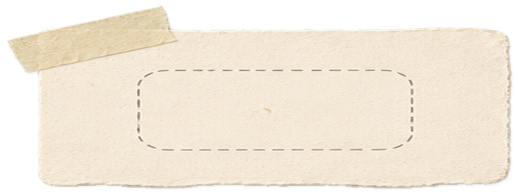
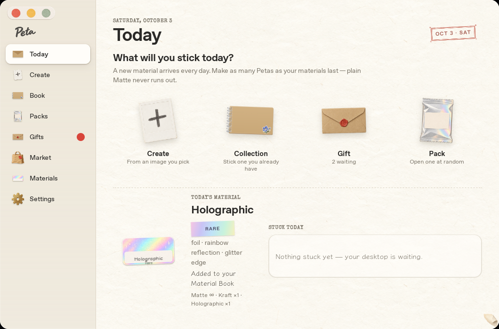
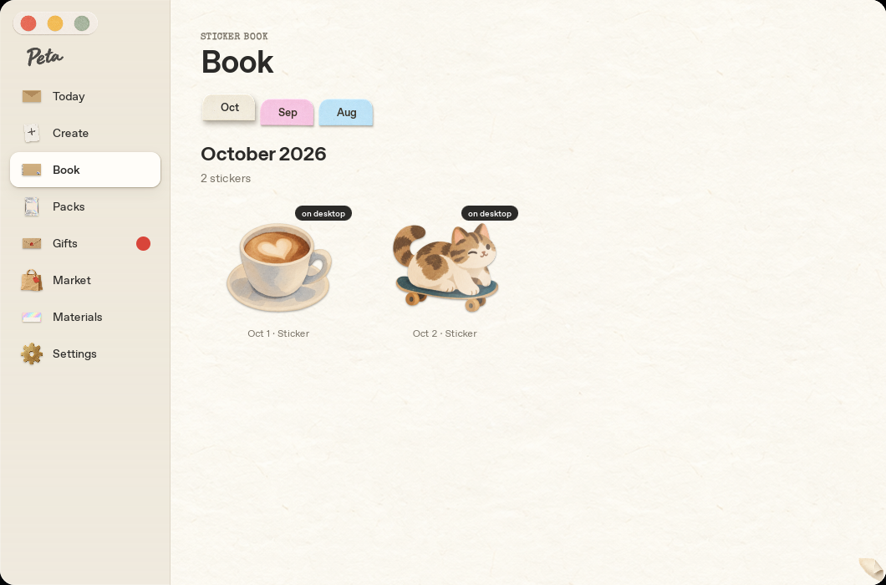
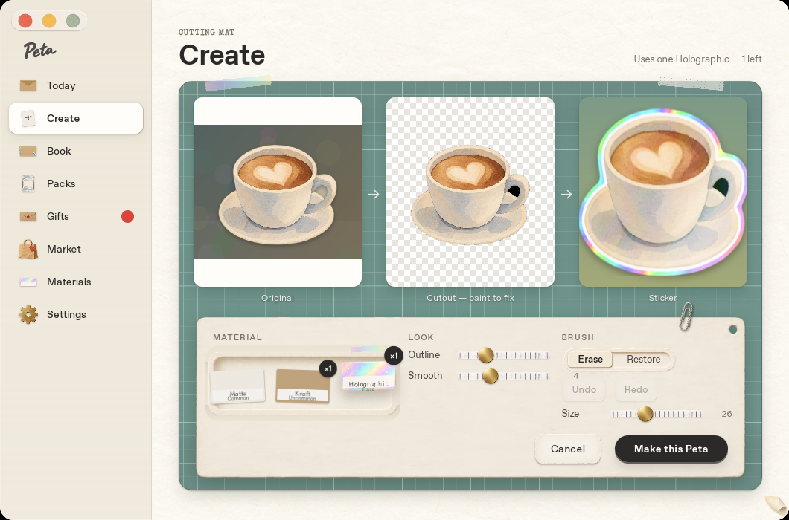
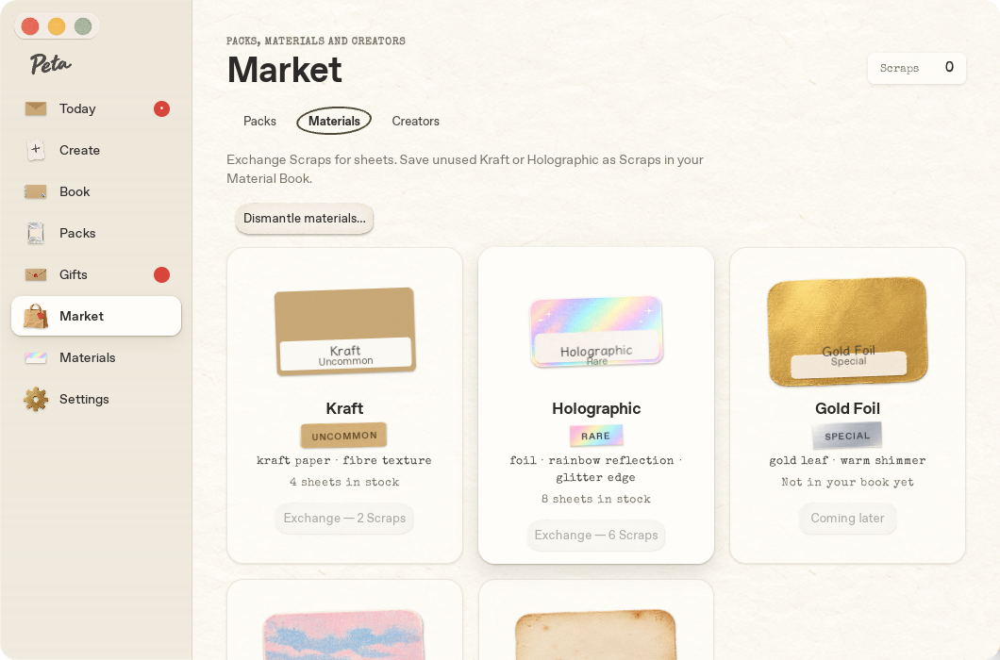
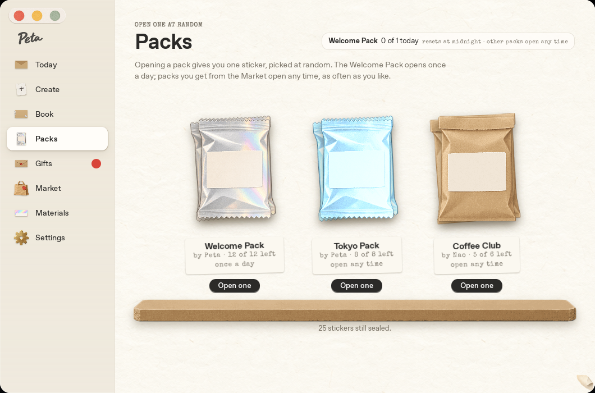

紙の質感は、もう十分に強い。次は“読みやすさ”と“迷わなさ”。
実機のスクリーンショット(Studio 1060×700)を12画面ぶん見直しました。アートは世界観を作り終えていて、いま足りないのは、その上に載る「情報の設計」です——文字の役割、強弱、そろい、状態の見え方、暗い部屋。
下の各ケースは、左右にドラッグして Before(実機)↔ After(提案)を比べられます。After は本物のアート素材(src/art)をそのまま使った HTML なので、質感はそのまま、構造だけが変わります。
部屋は静かに、物は主役に
窓・余白・文字は低い声で。ステッカー、封筒、パックという“物”だけが目を引く。
1つの役割に1つの声
見出し=システム太字、タイプライター=印字された物、手書き=ステッカーの裏。混ぜない。
状態は“見えて”から押す
買える/足りない/持っている/まだ先。灰色のボタンで済ませず、理由を表示する。
紙の物理は、可読性の下
傾き・影・質感は残す。ただし文字が読めない原因になったら、文字を優先する。
| # | 見つけたこと | 効き方 | 工数 | 場所 |
|---|---|---|---|---|
| 01 | 補助テキストのコントラストが AA を割っている muted #7a7468 は紙の上で 4.3、サイドバー上で 4.04、紙質テクスチャ上で 3.8(基準 4.5) | S | base.css トークン1行 | |
| 02 | 文字の“声”が3つ、同じ音量で話している 9〜11px のタイプライター体が補足情報を担当していて、読めない。役割で分ける | S–M | polish.css type presets | |
| 03 | Today の下段が崩れている 素材カード・説明・Stuck today の3列で上端も高さも揃わず、説明が4行に折れる。選択肢4つも同じ重さ | M | pages.css / today.js | |
| 04 | サイドバー: アイコンの大きさ・バッジの意味・グルーピング 赤丸が「何か来た」か「要対応」か分からない。8項目が1列のまま | S | shells.css / shell.js | |
| 05 | Market: ボタンが全部“押せない色” 残高0でも十分でも同じ見た目。足りない理由・在庫・Coming later の区別がない | M | market.js / pages.css | |
| 06 | Create の操作盤: ラベル・値・位置がばらばら 値が出るスライダーと出ないスライダー、迷子の「4」、状態が分からない Undo/Redo | M | create.js / pages.css | |
| 07 | Book: “毎日ひとつ”が画面から読めない 月タブは色が浮き、黒ピルが絵より強く、キャプションは情報ゼロ | M | book.js | |
| 08 | 夜の部屋(Night Desk)がない “物は紙のまま、部屋だけ暗くする”なら、アートを作り直さずに実現できる | L | トークン化 + shells.css | |
| 09 | ボタン/チップ/入力の“状態表”がない hover・pressed・focus・disabled を1枚に定義して、画面ごとの揺れを止める | M | base.css |
3つの声を、役割で分ける
いまは システム太字・Special Elite(タイプライター)・Klee One(手書き) が、見出しにも補足にも混ざっています。特に 9〜11px のタイプライター体(素材の説明、パックの残数、Stock)が読みづらい。「物に印字された文字」だけにタイプライターを残し、補足情報はシステム体に戻します。
foil · rainbow reflection · glitter edge
補足情報が 11px / タイプライター / #7a7468。字間が不均一で、数字の「1」と「l」が見分けにくい。
foil · rainbow reflection · glitter edge
補足は 12px / システム 500 / #655e51 / tabular-nums。タイプライターは印字された物(日付スタンプ・値札・封筒の数字)だけ。
System · 人が読む声
見出し・本文・ボタン・補足。SF Pro / ヒラギノ角ゴ。日本語と英語が並んでも段差が出ない。
Special Elite · 物に印字された声
日付スタンプ、値札、Scraps の数字、封筒の「次まで」。13px以上、かつ“物の上”だけ。
Klee One · 手書きの声
ステッカー裏の手書き、ギフトのメモ、付箋。UIの説明文には使わない。
| 役割 | 見本 | サイズ / 行間 | 太さ・字間 | 色 |
|---|---|---|---|---|
| Display | Today | 40 / 44 | 700 · −0.03em | ink |
| Title | Holographic | 22 / 26 | 700 · −0.02em | ink |
| Headline | Collection — Stick one you own | 15 / 20 | 650 · 0 | ink |
| Body | A new material arrives every day. Matte never runs out. | 14 / 21 | 400 · 0 | ink-2 |
| Meta | 1 in stock · found Oct 2 · 12 of 12 left | 12 / 16 | 500 · tabular-nums | ink-3 #655e51 |
| Overline | Sticker Book | 11 / 14 | 600 · +0.09em · caps | ink-3 |
| Stamp | OCT 3 · SAT | 13–17 | Special Elite · +0.06em | ink / red |
いちばん小さくて、いちばん効く修正
補助テキストの色 #7a7468 は、紙の上で 4.3:1、サイドバーで 4.04:1、紙の繊維テクスチャを含む実効背景ではさらに下がります(WCAG AA は 12px 前後の文字に 4.5:1)。色を少し深くするだけで、紙の温度感はそのまま通ります。
#7a7468#655e51#b8ad97数値は WCAG の相対輝度式で計算した実測値です。赤スタンプ #b94a3e は 4.73:1 で合格のため変更なし。
同時に、フォーカスリングは現状の #5b7be8(約3.6:1)でも 3:1 を満たすので維持し、ボタン上では“紙色の隙間+リング”の二重リングにして見失わないようにします(部品と状態)。
入口の画面に“主役”をつくる
毎日開く画面なので、最初の0.5秒で「何をすればいいか」が伝わるべきです。いまは4つの選択肢が同じ重さで、下段は列が揃っていません。Create を主導線にして、下段は2枚の同じ高さのカードに整理します。
Today
A new material arrives every day. Matte never runs out.
Create
Turn any image into a sticker, cut out on the mat.
Choose image ⌘OCollection
Stick one you own
Gift
2 waiting
Pack
Open one at random
Holographic Rare
 Matte ∞
Matte ∞ Kraft 1
Kraft 1 Holo 1
Holo 1
Nothing stuck yetMake a Peta
- 日付の重複を整理。eyebrow・ゴム印・カードの3か所に出ていた日付を、eyebrow 1か所に。右上は“次の封筒まで”の札(既存機能)だけを置く。
- Create を2倍幅のヒーローに。インクの1.5px枠と主ボタンで「毎日ここから」を示す。ほかの3つは一段静かに。
- サブ文を1行・12px固定。いまは「Stick one you already have」が2行に折れて、タイルの高さと絵の位置がばらついていた。
- 下段を2枚のカードに。上端と高さ(196px)を揃え、素材カードは“トレイ”に置いて質感を残す。説明は4行の文章→3つのチップ。
- 在庫を文章から“物”に。「Matte ∞ · Kraft ×1 · Holographic ×1」をスウォッチ+数字のピルに。Materials 画面と同じ記号になる。
- 空状態に次の一手。空白の箱ではなく、Make a Peta への導線を置く(Create に戻らず、ここから始められる)。
“毎日ひとつ”が、一目で数えられる帳面に
Peta の核は「1日1枚」の積み重ねです。ところがいまの Book は、淡いピンク/水色の月タブが静かな画面から浮き、黒い“on desktop”ピルが絵より強く、キャプションが「Oct 1 · Sticker」と情報を持っていません。月の送りと日別ストリップで積み重ねを見せ、台紙にステッカーを載せます。
Book



- 月タブ → 月の送り。パステル3色のタブをやめ、‹ October 2026 › で送る。色を使うのは“物”だけ、という原則に合わせる。
- 日別ストリップ。1日=1点。貼った日は塗り、今日はリング、未来は輪郭。「2 of 3 days」と“毎日ひとつ”が見える。(Calendar 表示への入口にもなる)
- キャプションに中身。「Oct 1 · Sticker」→ 名前 / 素材 / ORIGINAL 番号。日付は台紙左上のスタンプへ。
- 台紙(ドット罫)に載せる。透明PNGの輪郭が読め、絵がどれだけ細くても“カード”として揃う。
- 状態は小さく。黒い“on desktop”ピル→緑の点+11px。絵より強い要素を作らない。
- 今日の空きスロット。破線の枠で「まだ今日の1枚がない」を示し、そのまま Create / Collection へ。hover でアクション(Flip / Peel / Gift)。
操作盤を“格子”に載せる
カッティングマットの世界観(真鍮のつまみ、紙の操作盤)は魅力的です。ただ中身が共通の格子に乗っていません:値が出るスライダーと出ないもの、Erase の下に漂う「4」、押せるのか分からない Undo/Redo、下のキャプションが低コントラスト。段階を①②③として上に出し、操作盤を3カラム×同じ行の高さに揃えます。
Create

- 段階を①②③で上に。マット上の白文字ラベル(影つき)にして、下の薄い灰色キャプション(コントラスト不足)を廃止。進む方向が一目で分かる。
- 3枚を同じ高さ・同じ見え方に。Original に出ていた上下の白帯を消し(cover + 暗転)、カードの存在感をそろえる。
- スライダーは「ラベル | つまみ | 値」の3列グリッド。真鍮のつまみは残し、全スライダーに値を出す(Outline に値がなかった)。
- 迷子の「4」を撤去。値は Size の行へ。Undo / Redo はアイコンボタン+ツールチップ(⌘Z)。無効時は薄く。
- 素材は3枚の皿。名前と残数をプレートの外に。選択中は“インクのリング+チェック”(色に頼らない)。
- コスト表示を決定ボタンの隣へ。「Uses 1 Holographic · 1 left」を上端の右端からここへ。押す直前にだけ必要な情報だから。
“押せる”を、見ただけで分かるように
Market のカードは 全部が同じ薄いグレーのボタンで、残高が足りないのか、準備中なのか、押せるのか区別できません。カードの構造を固定(絵 / 名前+希少度 / 説明 / 在庫+価格)して、状態を3種類に分けます。※ 状態を見せるため、Afterは Scraps 残高 4 で描いています(Before は残高 0)。
Market
Warm brown paper with a visible fibre texture and a thin white border.
Foil with a rainbow reflection and a glitter edge that follows your cursor.
Real leaf, warm shimmer. Not in your Material Book yet.

- 下線タブ。手描きの丸囲み(選択中だけ線が太く不均一)から、選択=インクの下線へ。切り替えは下線が滑る。
- Scraps は“財布”。残高を右上の固定位置に。画面の途中に浮いていた “Dismantle materials…” は静かな副ボタンとして同じ行へ。
- カードの構造を固定。絵 / 名前+希少度シール / 説明2行(clamp) / 在庫+価格。タイプライター体の説明文はシステム体に。
- 状態 A: 買える。主ボタン(黒)で「Exchange · 2 Scraps」。価格がボタンの文言に入っているので迷わない。
- 状態 B: 足りない。ボタンを無効にせず「あと2」を進捗バーで示す。“押せない”ではなく“あとちょっと”に変わる。
- 状態 C: まだ先。Coming later は絵ごと彩度を落とし、錠前アイコン+“Pack で見つける”という次の行動を添える。
棚はそのまま。ラベルだけ“読める”ものに
パックの棚は、今回見たなかでいちばん完成度が高い画面です(紙袋のシルエット、棚板、接地影)。手を入れるのは情報の部分だけ——見出し右のピルに1行で詰め込まれた説明と、8〜9pxのタイプライター体のタグです。
Packs
One sticker, picked at random. The Welcome Pack opens once a day; Market packs open any time.

- 見出し右のピルを整理。「Welcome Pack 0 of 1 today resets at midnight · other packs open any time」の1行を、“Daily pack · 1 left · resets in 06:12”に絞り、他パックの説明は本文のリード文へ。
- ラベルを2段に。名前 15px/700 → by 12px → 残量(12個のセグメント)→ 数字。タイプライターの小文字をやめ、残量が“量”で見える。
- 主ボタンは1つ。いま開けられる日替わりパックだけ黒、他は副ボタン。全部が黒だと何から開ければいいか分からない。
- 棚板・接地影・袋のアートは変更なし。ここは触らないのが正解。hover で袋が少し浮く程度の反応だけ足す。
8つの項目に“順序”と“意味”を
サイドバーは全画面に出続ける、最も露出の多い部品です。いまはアイコンのアートごとに大きさと余白が違い、赤丸バッジの意味(今日の封筒?未開封のギフト?)が分かりません。グルーピング・統一タイル・数字バッジで整えます。
- 3つのグループ:Make(作る)/ Collect(集める)/ Discover(出会う)。項目が増えても迷わない。ラベルは 10.5px・caps・ink-3(AA)。
- アイコンを“同じ大きさのタイル”に。30px の淡い台座に 22px のアートを置き、封筒・ポラロイド・紙袋・歯車の面積差を吸収。アート自体は触らない。
- バッジの文法を分ける。数字(Gifts: 2)=届いた数はインクのピル。点(Today)=新しい封筒はクラフト色の点。赤は“エラー・要対応”専用に取っておく。
- ショートカットを hover で表示。⌘1〜⌘7(設定は ⌘,)。現在地の行では薄く常時表示。マウスでもキーボードでも同じ場所に。
- 設定とプロフィールを下端に固定。「Satoshi · 9 stickers」の小さな札で、ステッカーに印字される名前(Your name on stickers)の入口にもなる。
- 現在地は“白い紙片”だけ。色や線を足さず、いまの白ピル+影を維持(これは既に良い)。
最小幅の 720px では本文が窮屈になるので、840px 未満はサイドバーを 68px のレールに畳む。タイル化しておけば、そのまま縮めるだけで成立します(バッジは右上の数字に)。
物は紙のまま、部屋だけ夜にする
夜に開くアプリなので、真っ白な窓は眩しい。かといってステッカーや封筒のアートは暗くできません。そこで「窓・サイドバー・文字」だけを暗い部屋にして、紙の物はそのまま置く。机の上に紙が残っているイメージです。アートの作り直しは不要です。
side → win → surface2 → surface。純黒を避け、茶味のある暗色(#1d1a16)。奥ほど暗く、手前ほど明るい。
アートは触らず、暗い机の上に置く。影は強め(rgba(0,0,0,.5))、ステッカーの白縁がそのまま“光る”。
黒ピル→生成りピル(14.5:1)。リングは #8da6ff で暗所でも見失わない。
部品の“状態表”を1枚に決める
ボタンは黒ピル/紙ラベルの2系統まではよく整理されていますが、hover・pressed・focus・disabled の定義が画面ごとに少しずつ違う。以下を基準にすると、新しい画面を足すたびの揺れが止まります。昼・夜で同じ構造です。
Segmented
Input
Switch
Badges
Segmented
Input
Switch
Badges
黒の主ボタンは画面に1つ。紙ラベル(art)のボタンは“儀式”の場面(開封・封をする)だけに限定。通常のサブ操作は .sec(面+1pxの縁)。
フォーカスは二重リング。内側に窓の背景色の隙間2px、外側に #3f5fd1(夜 #8da6ff)2.5px。紙の上でも黒ボタンの上でも途切れない。
無効にする代わりに理由を出す。disabled は .42 の不透明度で“存在はするが今は使えない”。理由は隣のメタ文字で必ず説明する(Market の「あと2」など)。
動きの“役割”を4つに絞る
イージングはすでに5種類そろっていて、紙の動きの質は高い。課題はどの場面でどれを使うかの規則です。物が現れるときだけバネ、動くときは紙、押すときは短く、Reduce motion は消すのではなく1ステップ早い溶け合いに。カードにマウスを乗せると動きます。
Arrive
封筒・ギフト・パックなど“物”が現れる/着地する。
spring · 420–560msMove
ページ遷移、窓の移動、紙が重なる。
paper-ease · 560–640msPress
ボタン、ペタッ。押した感触だけ。
out · 120ms · scale .94Reduce motion
位置を動かさず、不透明度だけで遷移。
linear · 120msおすすめの着手順
上から順に、小さくて効くもの → 構造に触れるもの → 大きいもの。1〜2はこの週のうちに、全画面の印象が変わります。
| # | やること | 工数 | 触る場所 | 確認すること |
|---|---|---|---|---|
| 1 | ink-3(補助色)を #655e51 に、タイプライター体の補足情報をシステム体 12px に置換 | S | base.css polish.css | 全画面でコントラスト ≥ 4.5 / 日本語の折り返し |
| 2 | サイドバー: グルーピング・アイコンのタイル化・数字バッジ・ショートカット | S | shell.js shells.css | Desk シェルでも崩れないか / Gifts のバッジ更新 |
| 3 | Market のカード構造と状態3種(買える/足りない/まだ先) | M | market.js pages.css | Scraps 0・不足・十分の3状態をテスト |
| 4 | Today 下段を2カードに、Create をヒーロー化 | M | today.js pages.css | 最小 720×520 で折り返し・高さ / 次の封筒の札との同居 |
| 5 | Create の操作盤を格子に(値の表示、Undo/Redo アイコン化、①②③) | M | create.js pages.css | ブラシ即時反応・Undo 状態の同期 |
| 6 | Book: 台紙タイル+日別ストリップ(月タブ廃止) | M | book.js | List/Calendar 切替・遅延読み込みとの両立 |
| 7 | 部品の状態表を CSS トークンとして確定(focus 二重リング) | M | base.css | キーボードだけで全画面を巡回 |
| 8 | Night Desk(トークン化 → ダーク値 → 設定に Appearance) | L | base.css shells.css + Settings | 自動(システム追従)/ホロ反射の見え方 |
このプレビューについて。 Before は docs/port-spec/compare にある実機(Tauri)のスクリーンショットで、Linux/WebKitGTK で撮影されたものを含むため、macOS の実表示とは字形が少し違います(提案の判断には影響しない範囲)。After は HTML/CSS の見本で、アプリ本体(src/)は一切変更していません。Market の残高、Today のカウントダウン値などは状態を見せるための仮の値です。色のコントラスト値は WCAG 2.x の式で実計算しています。